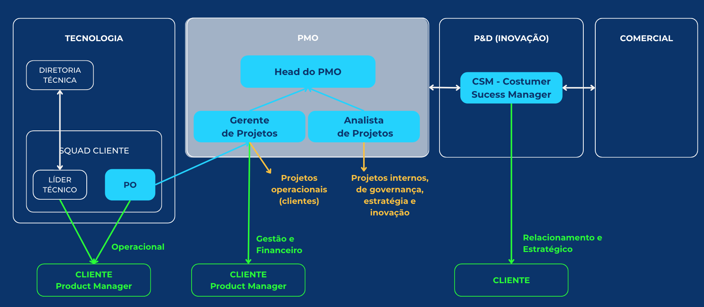

Bem-vindo ao Manual Operacional do PMO da X-Via
Este manual unificado integra todos os documentos essenciais para a operação do PMO da X-Via. Foi desenvolvido para ser um documento vivo, navegável e de fácil consulta para todos os stakeholders.
📋 Conteúdo do Manual
📋 Visão Geral
Missão
Modelo de Operação
Objetivos Estratégicos
Princípios Norteadores
Escopo de Atuação
Serviços Oferecidos
Resultados Esperados
👥 Governança
Fluxo de Informação
Governança de Decisões
Autoridade e Autonomia do PMO
Interação entre PMO e POs
📊 KPIs e Métricas
Métricas de sucesso do PMO
KPIs de Monitoramento de Projetos
Ciclo de Melhoria Contínua
⚙️ Processos
Ciclo de Vida dos Projetos
Fases e Entregáveis
Fluxogramas dos Processos
Comunicação e Checkpoints
🛠️ Ferramentas
Plataformas e tecnologias utilizadas para gestão de projetos e colaboração.
📄 Templates
Modelos padronizados para documentação e gestão dos projetos.
🏗️ Roadmap
Documentação para Desesenvolvimento Futuro.
Versão: 1.0 | Data: Junho 2025 | Responsável: Head do PMO
Visão Geral do PMO X-Via
Missão do PMO
Estruturar e padronizar a gestão de projetos da X-Via, garantindo a excelência na entrega de soluções de governo digital e suportando o crescimento sustentável da empresa.
🏗️ Modelo
Híbrido
- Suporte: Ferramentas, templates, treinamento
- Controle Leve: Padrões, monitoramento, visibilidade
Objetivos
- Padronizar processos e metodologias
- Garantir visibilidade dos projetos
- Alinhar projetos aos objetivos estratégicos
- Melhorar satisfação do cliente
- Promover aculturamento em gestão
Princípios Norteados
- Transparência e comunicação aberta
- Melhoria contínua e adaptabilidade
- Foco no cliente e valor entregue
- Colaboração e trabalho em equipe
- Decisões baseadas em dados
Escopo de Atuação
O PMO atua em todos os projetos da X-Via, abrangendo:
- Projetos Operacionais: Implantações e serviços diretamente relacionados aos clientes governamentais.
- Projetos Internos Estratégicos: Iniciativas que visam o alcance dos objetivos e resultados-chave da X-Via.
- Projetos de Inovação e P&D: Desenvolvimento de novos produtos e serviços, e pesquisa e desenvolvimento.
- Projetos de Governança Corporativa: Iniciativas para padronização e melhoria de processos internos da empresa.
Serviços Oferecidos pelo PMO
Definição de Metodologias e Fluxos
Estabelecimento e disseminação de metodologias e fluxos de trabalho padronizados para a gestão de projetos.
Suporte na Estruturação, Kick-off e Encerramento
Apoio na fase inicial e final dos projetos, incluindo a estruturação e condução de reuniões de kick-off e learning.
Consolidação de Status e Riscos
Monitoramento e consolidação do status dos projetos e identificação e gestão de riscos.
Apoio Técnico aos POs e Líderes Técnicos
Suporte e orientação técnica aos Product Owners e Líderes Técnicos das Squads.
Mediação de Reuniões Estratégicas
Facilitação de reuniões estratégicas para alinhamento e tomada de decisões.
Criação de Painéis de Visibilidade
Desenvolvimento de dashboards e painéis para acompanhamento visual do portfólio de projetos.
Integração entre Áreas e Squads
Promoção da comunicação e colaboração entre as diferentes áreas e Squads da X-Via.
🚀 Resultados Esperados
- Eficiência e padronização
- Cultura forte em gestão
- Base sólida para escalar
- Alinhamento estratégico
- Comunicação fluida
- Decisões mais assertivas
- Recursos bem utilizados
Estrutura
A estrutura do PMO da X-Via é projetada para ser ágil e adaptável, suportando o crescimento da empresa e promovendo uma cultura de gestão de projetos eficiente e colaborativa. O PMO atua como um centro de excelência, fornecendo suporte, padronização e governança para todos os projetos da X-Via.
Modelo de Entrega
- Modelo Híbrido: Atuação com foco em suporte e controle leve.
- Plataforma Central: Utilização do Monday.com como ferramenta principal de gestão.
- Relatórios Mensais: Status consolidado dos projetos para a alta gestão.
- Integração com Áreas: Via reuniões e comitês para alinhamento contínuo.
- Atuação Conjunta: Colaboração próxima com POs e Líderes Técnicos.
Organograma
O PMO da X-Via é composto por uma equipe estratégica e multifuncional, desenhada para otimizar a gestão de projetos e garantir o alinhamento com os objetivos da empresa. Abaixo, o organograma proposto:
Papéis e Responsabilidades
Head do PMO
Foco:
Estratégia, governança e liderança do PMO, garantindo o alinhamento com os objetivos da X-Via e a evolução da maturidade em gestão de projetos.
Nível de Atuação:
Executivo, com reporte direto ao C-Level.
Responsabilidades:
- Definir e implementar a estratégia do PMO.
- Gerenciar o portfólio de projetos da X-Via garantindo o alinhamento com os objetivos estratégicos para geração de valor.
- Garantir a governança e padronização dos processos de gestão de projetos.
- Liderar a equipe do PMO e promover seu desenvolvimento.
- Acompanhar iniciação e encerramento dos projetos do portfólio.
- Participar de reuniões estratégicas.
- Promover o aculturamento em gestão de projetos na organização.
- Atuar como ponto focal para a alta gestão em assuntos de projetos.
- Gerar os relatórios mensais para o board da X-Via e manter o Dashboard executivo sempre atualizado.
Gerente de Projetos
Foco:
Gestão de projetos operacionais para clientes governamentais, garantindo a satisfação e o sucesso das implantações e serviços.
Nível de Atuação:
Tático e operacional, com interação direta com PO e líderes Técnicos.
Responsabilidades:
- Acompanhar e monitorar os projetos operacionais.
- Liderar a Iniciação dos projetos.
- Fazer o gerenciamento financeiro dos projetos.
- Oferecer apoio aos POs e líderes técnicos.
- Participar de reuniões estratégicas.
- Monitorar escopo, prazo, custo e qualidade dos projetos.
- Manter a documentação dos projetos atualizada.
- Comunicar o status dos projetos aos stakeholders.
- Identificar e gerenciar riscos e problemas.
- Garantir a entrega dos projetos dentro das expectativas do cliente.
- Liderar o encerramento dos projetos.
- Colaborar na implementação de melhorias de processos.
Analista de Projetos
Foco:
Suporte à gestão de projetos internos (estratégicos, de governança e inovação), garantindo a organização e o fluxo das informações.
Nível de Atuação:
Operacional e de suporte, com foco na execução de processos e na organização de dados.
Responsabilidades:
- Acompanhar e monitorar os projetos internos.
- Liderar a Iniciação dos projetos.
- Fazer o gerenciamento financeiro dos projetos.
- Oferecer apoio aos POs.
- Participar de reuniões estratégicas.
- Monitorar escopo, prazo, custo e qualidade dos projetos.
- Manter a documentação dos projetos atualizada.
- Comunicar o status dos projetos aos stakeholders.
- Identificar e gerenciar riscos e problemas.
- Garantir a entrega dos projetos dentro das expectativas do cliente.
- Fazer o encerramento dos projetos.
- Colaborar na implementação de melhorias de processos.
Interações Chave
O PMO atua de forma transversal, interagindo com diversas áreas e stakeholders para garantir o sucesso dos projetos e o alinhamento estratégico:
POs e Líderes Técnicos
Colaboração próxima para suporte metodológico, ferramentas e governança, sem sobrepor as responsabilidades do PO no produto.
Heads das Áreas
Alinhamento estratégico, gestão de recursos e resolução de impedimentos em nível tático.
C-Level
Reporte direto para alinhamento estratégico, tomada de decisões de alto nível e garantia de suporte executivo.
Área Comercial
Alinhamento de expectativas de novos clientes e suporte na análise de viabilidade de propostas.
Pós-Venda
Acompanhamento da satisfação dos clientes e identificação de novas oportunidades de negócio.
Garantir o elo constante e saudável com a área de Novos Produtos e Inovação.
Área Financeira
Gestão orçamentária dos projetos e controle de custos.
Recursos Humanos
Capacitação, desenvolvimento de competências e apoio na alocação de talentos.
Governança
A governança do PMO da X-Via é estruturada para garantir a clareza na tomada de decisões, o alinhamento estratégico dos projetos e a eficácia na alocação de recursos. Ela define como as decisões são tomadas, quem as toma e como a informação flui dentro da organização.
Fluxo de Informação
O PMO terá autoridade para consolidar informações de status, riscos, resultados e roadmap dos projetos em andamento. Os POs e Líderes Técnicos reportarão status operacionais por meio de templates e ciclos definidos. O PMO será responsável por gerar relatórios de progresso com dados confiáveis e de fácil leitura para os comitês executivos.
Governança de Decisões
Para garantir clareza e agilidade na tomada de decisão, a seguinte estrutura de governança será adotada:
- Processo de Escalação: Decisões que excedam a autonomia do Gerente de Projeto ou do PO serão escaladas primeiramente ao Head do PMO. Questões estratégicas ou que impactem múltiplos projetos/áreas serão levadas ao Comitê de Portfólio ou, se necessário, ao Comitê Executivo (C-Level).
- Comitês de Governança:
- Comitê de Portfólio (a ser estabelecido): Composto por representantes do PMO, lideranças de áreas chave (Tecnologia, Comercial, Financeiro, Inovação) para revisão periódica do portfólio, priorização estratégica e resolução de conflitos de recursos.
- Comitê Executivo (C-Level): Responsável por decisões de maior impacto estratégico, aprovação de grandes investimentos e resolução final de impasses.
- Critérios de Priorização: A priorização de projetos considerará uma combinação de fatores, incluindo: alinhamento com os OKRs da X-Via, impacto no cliente (satisfação, retenção), retorno sobre o investimento (ROI) ou valor estratégico, urgência, dependências entre projetos e disponibilidade de recursos.
- Aprovação de Mudanças Significativas: Mudanças que impactem significativamente o escopo, prazo, custo ou qualidade dos projetos deverão ser formalizadas através de um processo de solicitação de mudança, avaliadas pelo PMO e aprovadas conforme alçada definida (ex: Head do PMO para mudanças de médio impacto, Comitê de Portfólio para alto impacto).
Autoridade e Autonomia do PMO
- Autonomia para tomar decisões sobre processos, metodologias e ferramentas de gerenciamento de projetos;
- Autonomia para priorização de projetos dentro dos critérios definidos e até o ponto que não comprometa objetivos estratégicos ou prazos de entrega aos clientes;
- Autoridade para solicitar informações e reportes dos projetos de todas as áreas da organização.
Interação PMO com Product Owners (POs) Operacionais
O PMO atuará como facilitador, mentor e provedor de governança e padronização para os POs e Squads, sem sobrepor o papel do PO.
Papéis Claramente Definidos:
- PMO: foco no "COMO" (metodologias, processos) e na saúde do portfólio;
- PO: foco no "O QUÊ" e "PORQUÊ" do produto/projeto da Squad.
O PMO fornecerá suporte estratégico aos POs através de metodologias, templates, ferramentas, treinamentos e comunidades de prática. Fluxos de informação estruturados serão estabelecidos entre Squads/POs e o PMO.
KPIs e Métricas
O PMO da X-Via monitorará um conjunto de Key Performance Indicators (KPIs) e métricas para avaliar o desempenho dos projetos, a eficácia dos processos e o alinhamento com os objetivos estratégicos da empresa. Esses indicadores fornecerão dados concretos para a tomada de decisões e a melhoria contínua.
Métricas de Sucesso do PMO
- Taxa de sucesso dos projetos: Avalia a proporção de projetos concluídos dentro do prazo, custo e escopo planejados.
- Satisfação dos clientes: Medida através de pesquisas de satisfação (NPS) e feedback direto, refletindo a qualidade das entregas e o relacionamento.
- Eficiência operacional e padronização: Indicadores relacionados à otimização de processos, redução de retrabalho e aderência às metodologias do PMO.
- Visibilidade e controle do portfólio: Avalia a clareza e a disponibilidade das informações sobre o status, riscos e progresso dos projetos em nível de portfólio.
- Percentual de contribuição dos projetos para o alcance dos objetivos estratégicos da empresa: Mede o impacto direto dos projetos nos OKRs e metas da X-Via.
KPIs de Monitoramento de Projetos
Todos os projetos estratégicos devem ser monitorados via dashboard executivo. Os KPIs básicos a serem acompanhados são:
Status do Projeto
- Em Análise, Fila, Em Andamento, Standby, Concluído, Cancelado
Recursos
- Alocados
- Horas trabalhadas
Prazo
- Planejado x Real
Entregas
- Entregas-chave
- % de execução
Dados Financeiros
- Horas contratadas x utilizadas x previstas x saldo disponível
- Burn rate
Satisfação do Cliente
- NPS mensal (Net Promoter Score)
Ciclo de Melhoria Contínua
- Revisões Periódicas: Revisões trimestrais de processos e ferramentas para garantir a relevância e eficácia.
- Coleta de Feedback: Mecanismos para coletar feedback das áreas e Squads sobre a atuação do PMO.
- Acompanhamento da Maturidade: Monitoramento contínuo da maturidade em gestão de projetos da X-Via.
- Atualização do Modelo: Adaptação do modelo do PMO conforme o crescimento e as necessidades da empresa.
Processos
A Estrutura Analítica do Projeto (EAP) detalha os entregáveis de cada fase do projeto:
1.0 Iniciação
| 1.0 Iniciação | Detalhamento | Responsável | Participantes |
|---|---|---|---|
| 1.1 Assinatura do Contrato | Revisão e assinatura do contrato pelo Jurídico | Jurídico | Pré-Vendas |
| 1.2 Planejamento de recebíveis | Definir cronograma de recebíveis | Pré-Vendas | Financeiro |
| 1.3 Designação formal do PM, Líder Técnico e PO | Registrar nomeações | Head PMO | PMO, PO, Líder Técnico e Pré-Vendas |
| 1.4 Identificação e registro dos stakeholders | Mapear e documentar partes interessadas | Pré-Vendas | Head PMO |
| 1.5 Desenvolver e Apresentar TAP / Handover Pré-Vendas > Projetos | Alinhar expectativas | Pré-Vendas | Comercial, PMO, Líder Técnico e PO |
| 1.6 Elaboração do Escopo e Cronograma Macro | Descrever entregáveis e marcos no TAP | PO | Líder Técnico, PMO e Pré-Vendas |
| 1.7 Checklist de Assets | Verificar materiais de entrada necessários | Líder Técnico | Pré-Vendas e PO |
| 1.8 Kick-off técnico com equipe interna | Apresentar escopo e responsabilidades técnicas | Líder Técnico | PO, Equipe de Desenvolvimento e QA |
| 1.9 Kick-off com o cliente | Alinhar cronograma, escopo e comunicação | PO | Cliente, Líder Técnico, PMO e Pré-Vendas |
2.0 Planejamento
| 2.0 Planejamento | Detalhamento | Responsável | Participantes |
|---|---|---|---|
| 2.1 Detalhamento do Escopo Técnico | Definir funcionalidades e requisitos em documento | PO | Líder Técnico, Equipe Técnica e Gerente de Projetos |
| 2.2 Estimativas e Cronograma Detalhado | Montar e validar as estimativas e cronograma com datas e responsáveis | PO | Líder Técnico, Equipe Técnica e Gerente de Projetos |
| 2.3 Identificação de Riscos | Listar riscos e definir planos de contingência | PO | Líder Técnico, Equipe Técnica e Gerente de Projetos |
| 2.4 Alocação de Recursos | Reservar pessoas, ferramentas e estimar tempo | PO | Líder Técnico e Gerente de Projetos |
3.0 Execução
| 3.0 Execução | Detalhamento | Responsável | Participantes |
|---|---|---|---|
| 3.1 Execução e acompanhamento das demandas | Dailys, Backlog e Sprints | PO | Líder Técnico, Equipe Técnica |
| 3.2 Atualização contínua das documentações | Escopo, Cronograma, Backlog, Matrizes | PO | Líder Técnico |
| 3.3 Controle financeiro do projeto | Burn Rate, Horas, Notas Fiscais e Cobranças | Gerente de Projetos | Financeiro |
| 3.4 Status Report | Elaboração e envio de Status Report Semanal | PO | Cliente e Gerente de Projetos |
| 3.5 NPS | Envio da Pesquisa Mensal aos Stakeholders (cliente) | Gerente de Projetos | Cliente |
| 3.6 Validação Interna e QA | Elaboração e envio de Status Report Semanal | QA | Líder Técnico, PO e Equipe Técnica |
| 3.7 Ajustes de QA | Elaboração e envio de Status Report Semanal | PO | QA, PO e Líder Técnico |
4.0 Homologação e Publicação
| 4.0 Homologação e Publicação | Detalhamento | Responsável | Participantes |
|---|---|---|---|
| 4.1 Homologação com Cliente | Fluxo de Homologação | PO | Cliente, Líder Técnico e Equipe Técnica |
| 4.2 Ajustes pós-homologação | Ajustes | Equipe Técnica | Líder Técnico e PO |
| 4.3 Deploy | Deploy em produção e testes finais | Equipe Técnica | QA, Líder Técnico e PO |
5.0 Capacitação Cliente
| 5.0 Capacitação Cliente | Detalhamento | Responsável | Participantes |
|---|---|---|---|
| 5.1 Desenvolvimento dos materiais | Desenvolver os materiais de capacitação | PO | Líder Técnico e Gerente de Projetos |
| 5.2 Workshop | Realização de workshop ou treinamento com o cliente | PO | Líder Técnico e Gerente de Projetos |
6.0 Encerramento
| 6.0 Encerramento | Detalhamento | Responsável | Participantes |
|---|---|---|---|
| 6.1 Conclusão Formal do Projeto | Preencher checklist de encerramento | PO | Líder Técnico e Gerente de Projetos |
| 6.2 Pesquisa de satisfação com cliente | Aplicação de pesquisa de satisfação com cliente | Gerente de Projetos | Cliente |
| 6.3 Coleta de lições aprendidas | Learning Meeting + Jamboard | Gerente de Projetos | PO + Head PMO + Líder Técnico + Equipe Técnica + QA + Pré-Vendas + Pós-Vendas + Comercial |
| 6.4 Relatório Executivo | Elaboração e Envio | Gerente de Projetos | Head PMO |
Comunicação e Checkpoints
Reuniões
- Planning (Início de cada Sprint):
- Participantes: Product Owner (PO) e Time de Desenvolvimento.
- Objetivo: Planejar o trabalho da Sprint, selecionar itens do Backlog e criar o Backlog da Sprint.
- Daily (Diariamente):
- Participantes: Product Owner (PO) e Time de Desenvolvimento.
- Objetivo: Sincronizar as atividades do time e criar um plano para as próximas 24 horas.
- Review (Final de cada Sprint):
- Participantes: Product Owner (PO) e Time de Desenvolvimento
- Objetivo: Demonstrar o incremento da Sprint, obter feedback e adaptar o Backlog do Produto.
- Checkpoints Quinzenais PMO:
- Participantes: Gerente de Projetos e Portfólio (do PMO) e Product Owner (PO).
- Objetivo: Alinhamento do PMO com o projeto, identificação de desafios, suporte e verificação da aplicação dos padrões.
- Alinhamentos Pontuais com Stakeholders:
- Participantes: Depende da necessidade, pode incluir o PO, membros do time, representantes do PMO, etc.
- Objetivo: Resolver questões específicas e garantir o alinhamento com os stakeholders.
Acompanhamentos
- Status Reports Semanais:
- Participantes: Product Owner (PO).
- Destinatário: Cliente.
- Objetivo: Informar o cliente sobre o progresso do projeto.
- Atualização Mensal do Dashboard Executivo:
- Participantes: Head de PMO.
- Destinatários: Liderança da X-Via.
- Objetivo: Fornecer uma visão geral do portfólio de projetos para a alta gestão.
Ferramentas e Templates
A X-Via utiliza um conjunto de ferramentas e tecnologias para otimizar a gestão de projetos e a colaboração entre as equipes. A plataforma central para a gestão de projetos é o Monday.com, complementado por outras ferramentas para comunicação, documentação e desenvolvimento.
Plataforma Central de Gestão de Projetos
Monday.com
O Monday.com é a ferramenta principal para o gerenciamento dos projetos.
Comunicação
- Google Chat: Para comunicação rápida e colaboração em tempo real.
- Google Meet: Para reuniões online e videoconferências.
Documentação e Colaboração
- Google Drive: Para armazenamento e compartilhamento de documentos, planilhas e apresentações.
- Miro: Para desenho de fluxos e processos
- Jamboard: Para sessões de brainstorming e colaboração visual.
Templates
O PMO da X-Via disponibiliza uma série de templates e modelos padronizados para auxiliar na gestão de projetos, garantindo consistência, eficiência e qualidade na documentação. O uso desses templates é fundamental para a padronização e o sucesso dos projetos.
TAP (Termo de Abertura do Projeto)
Documento formal que autoriza o início de um projeto, definindo seus objetivos, escopo inicial, stakeholders e gerente de projeto.
Registro de Stakeholders
Template para identificar e registrar todas as partes interessadas do projeto, suas expectativas e seu nível de influência.
RACI (Matriz de Responsabilidade)
Matriz para definir claramente os papéis e responsabilidades (Responsible, Accountable, Consulted, Informed) de cada membro da equipe em relação às atividades do projeto.
Kick-off (Apresentação e Ata)
Modelos para a apresentação de início do projeto e para o registro das decisões e próximos passos da reunião de kick-off.
Escopo Técnico
Template para detalhar o escopo técnico do projeto, incluindo funcionalidades, requisitos e entregáveis específicos.
Cronograma
Modelos de cronograma para planejamento e acompanhamento das atividades do projeto, com marcos e prazos definidos.
Status Report
Template para relatórios periódicos de status do projeto, informando o progresso, riscos, problemas e próximos passos aos stakeholders.
Pesquisa de Satisfação do Cliente
Modelo de questionário para coletar feedback dos clientes sobre as entregas e o relacionamento com a X-Via.
Relatório Executivo de Encerramento
Template para o relatório final do projeto, resumindo os resultados, lições aprendidas e a performance geral.
Checklist de Encerramento de Projeto
Lista de verificação para garantir que todas as atividades necessárias para o encerramento formal de um projeto sejam concluídas.
Registro de Lições Aprendidas
Template para documentar as lições aprendidas ao longo do projeto, visando a melhoria contínua dos processos e futuras iniciativas.
Anexos e Glossário
Documentos de Referência:
- Mandato Formal do Escritório de Projetos (PMO) - X-Via: Documento que autoriza formalmente a existência do PMO, define seu escopo, autoridade e responsabilidades.
- Proposta de Implantação do PMO na X-Via: Documento inicial que apresentou a proposta de estruturação do PMO para o C-Level.
Glossário:
- TAP: Termo de Abertura do Projeto
- RACI: Matriz de Responsabilidade (Responsible, Accountable, Consulted, Informed)
- QA: Quality Assurance (Garantia de Qualidade)
- NPS: Net Promoter Score (Índice de Satisfação do Cliente)
- Burn Rate: Velocidade de consumo de horas/recurso do projeto
- Jamboard: Ferramenta visual para colaboração de equipe (Google)
Roadmap
Documentação para Desenvolver:
- Playbook de Processos e Metodologias: Documento mais aprofundado sobre os processos e metodologias de gestão de projetos, com fluxogramas e exemplos práticos.
- Guia de Interação PMO-POs: Detalhamento das melhores práticas para a colaboração entre o PMO e os Product Owners das Squads.
- Manual de Onboarding para Novos Colaboradores do PMO: Guia detalhado para a integração de novos membros à equipe do PMO.
- Plano de Comunicação do PMO: Estratégia detalhada para a comunicação interna e externa das iniciativas e resultados do PMO.